# A tibble: 215 × 4,000
`0.063915` `0.033242` `0.018484` `0.0086177` `0.035629` `0.037925` `0.028865`
<dbl> <dbl> <dbl> <dbl> <dbl> <dbl> <dbl>
1 0.0254 0.0511 0.0563 0.0217 0.0274 0.0149 0.0225
2 0.0255 0.0361 0.0542 0.00974 0.0275 0.0523 0.0428
3 0.0128 0.0297 0.0793 0.0507 0.0397 0.0577 0.0445
4 0.0198 -0.0106 -0.00750 0.0190 0.0688 0.0618 0.0390
5 0.0390 0.0394 0.00134 0.0262 0.0441 0.0440 0.0396
6 0.0232 0.0538 0.0370 0.0216 0.0388 0.0389 0.0516
7 0.0270 0.0101 0.0177 0.0112 0.0367 0.0160 0.00668
8 0.0394 0.0389 0.0316 0.0196 0.0209 0.0300 0.0293
9 0.0134 0.0165 0.0158 0.00492 0.0126 0.0322 0.0182
10 0.0337 0.0417 0.0326 0.0290 0.0285 0.0499 0.0502
# ℹ 205 more rows
# ℹ 3,993 more variables: `0.061731` <dbl>, `0.0631` <dbl>, `0.024787` <dbl>,
# `0.034473` <dbl>, `0.033539` <dbl>, `0.01043` <dbl>, `0.018585` <dbl>,
# `0.051385` <dbl>, `0.045839` <dbl>, `0.02908` <dbl>, `0.079736` <dbl>,
# `0.089912` <dbl>, `0.06538` <dbl>, `0.048052` <dbl>, `0.017063` <dbl>,
# `0.016695` <dbl>, `0.013443` <dbl>, `0.016502` <dbl>, `0.061453` <dbl>,
# `0.085336` <dbl>, `0.069497` <dbl>, `0.063938` <dbl>, `0.045307` <dbl>, …DATA 608 Meetup 10: Dimensionality Reduction
George I. Hagstrom
Week Summary
- Data Story 5 is Due this Sunday at Midnight
- Reading is Section 12.3 of Fundamentals of Data Visualization
- What to do when the data has too many variables to visualize?
Many variables?
- Pair Plot?
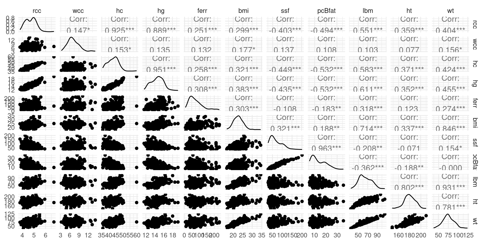
Pair Plots are Limited
- Data is physiological properties of Australian Olympians
- Takes time to read
- Other options like correlograms also somewhat limited
- We could use an alternative even though these techniques are useful
Hopeless when data increases more
- Here is a dataset of biomarker measurements from both ovarian cancer patients and healthy controls
- There are 4000 variables
- There will be no pair-plots
Dimensionality Reduction
- Many datasets have a large number of variables
- We often have intuition that the data follows simpler patterns
- Otherwise we couldn’t understand it
- This motivates a search for simpler representations, which can be powerful visualization tools
Low-D Representation
- Using a tool called Principal Component Analysis, can separate the groups neatly
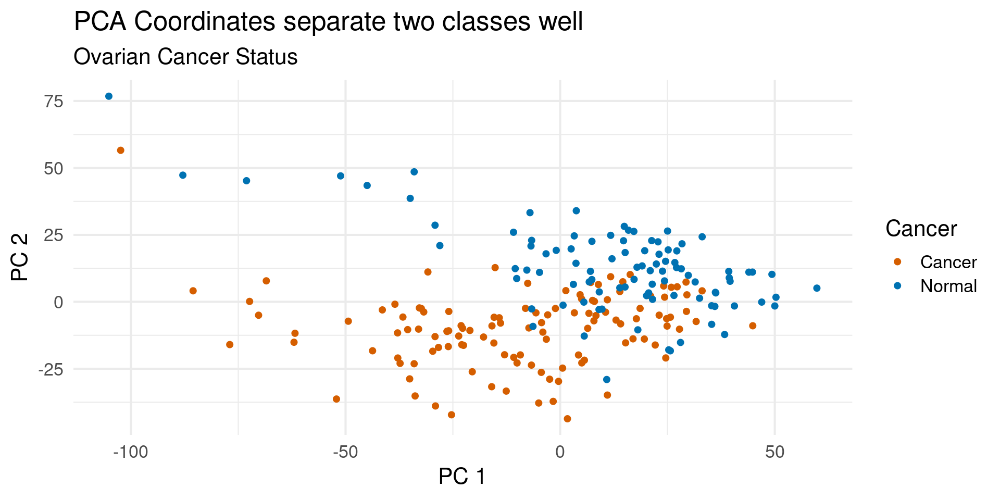
3D Representation
- 3D Neatly separates them
Principal Component Analysis (PCA)
- PCA finds a new coordinate system
- New directions called
Principal Components - Each PC is a combination/rotation of other ones
- PCs ordered based variability of the data
Simple PCA example
- Make a “1D” dataset in two dimensions
- Data lies along a straight line with some noise
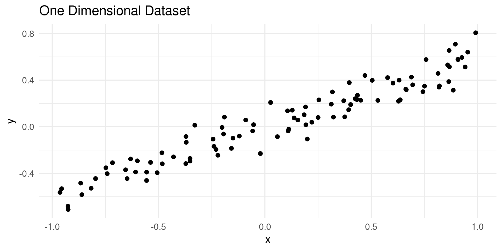
Simple PCA Example
- PCA looks for vectors along which the “variance” is maximized
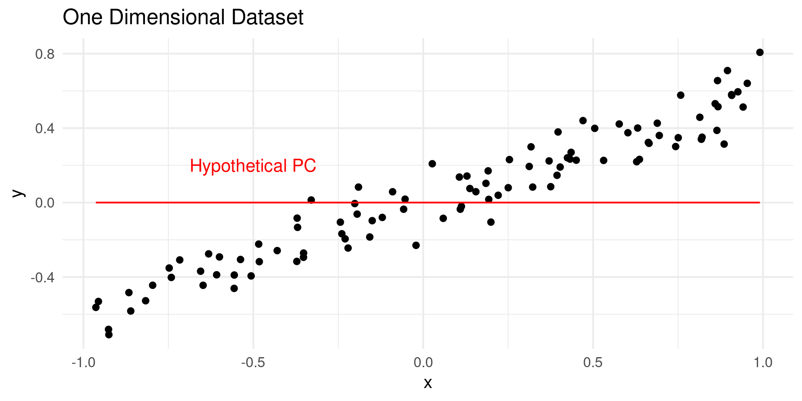
Simple PCA Example
- Project data points onto component
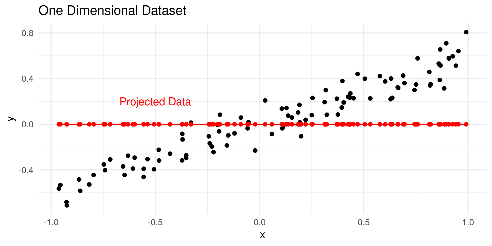
Find the Variance
- Project data points onto component
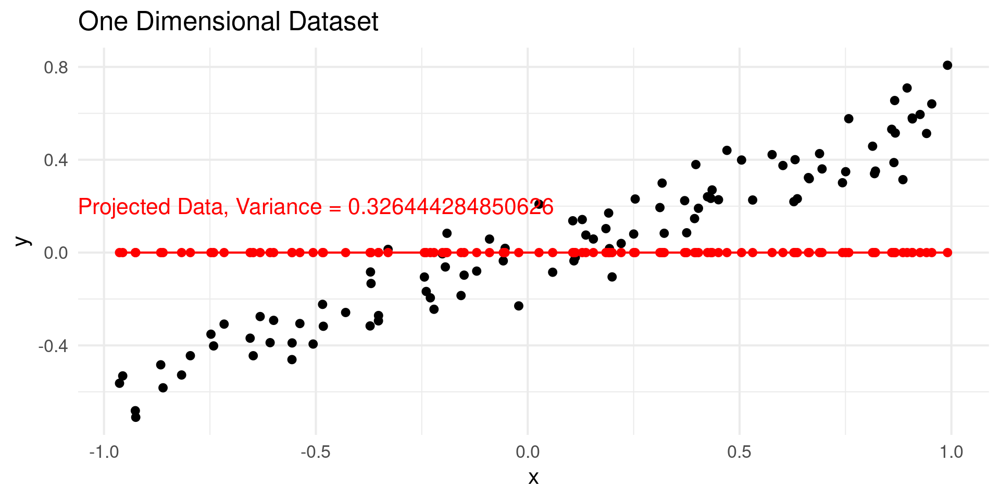
Looking at Multiple Projections
- Any projection is possible
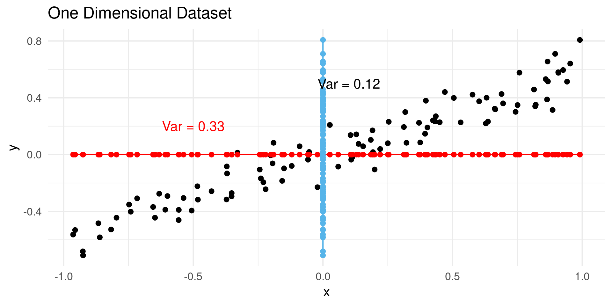
First Principal Component
- PC1 maximizes variance
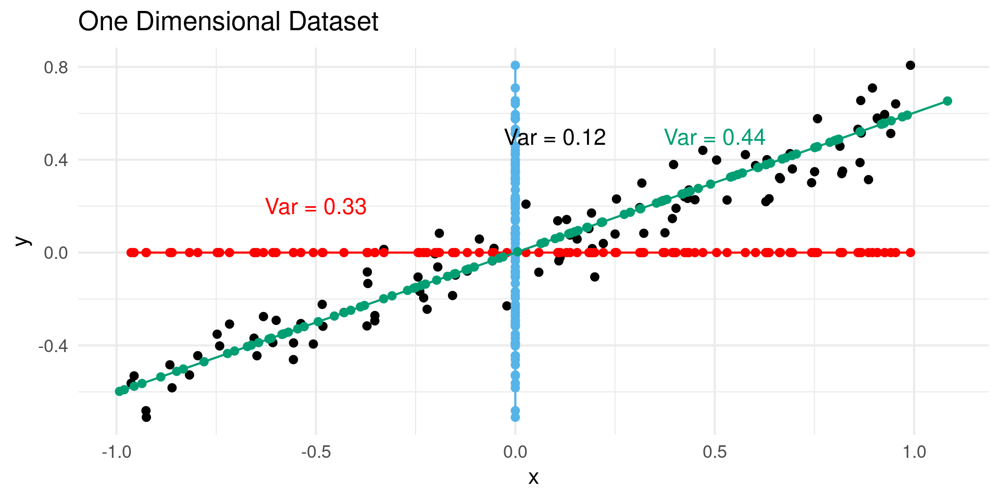
Subsequent Projections Repeat Process
- PC1 is the direction with the most variance
- PC2 is perpendicular to PC1, most variance
- PC3 is perpendicular to PC1 and PC2, most variance
- \(N\) dimensional dataset has \(N\) PCs
Why is it Dim. Reduction?
- Each PC is a variable
- You can discard low variance PCs
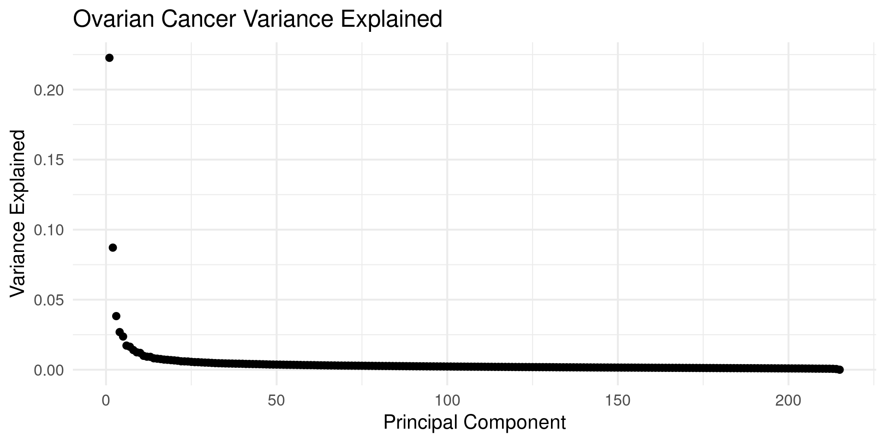
Picking a Dimension
- You can discard low variance PCs
- Use “Elbow” of plot to pick cutoff
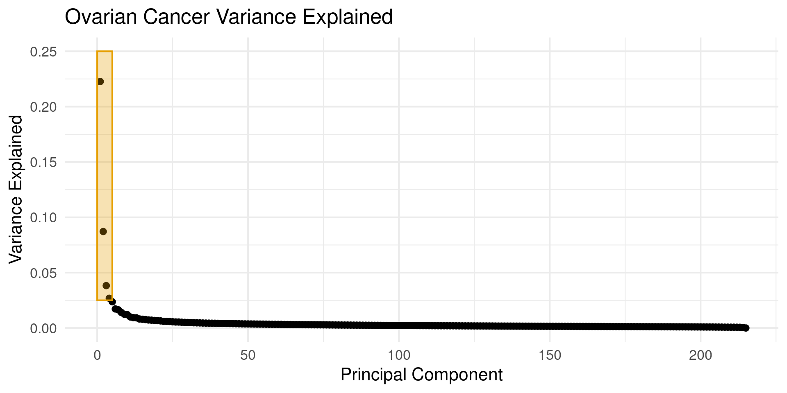
Australian Atheletes Example
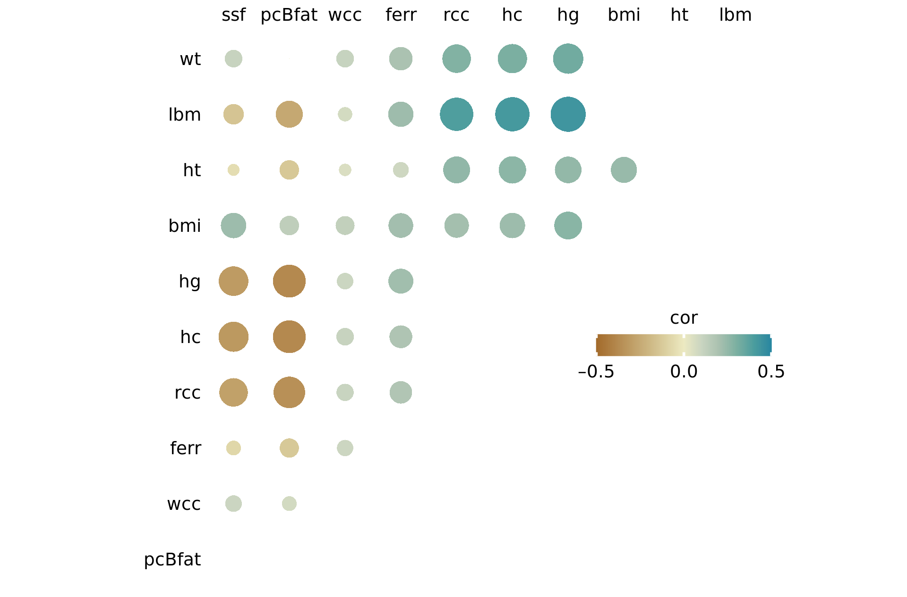
Athletes PCs
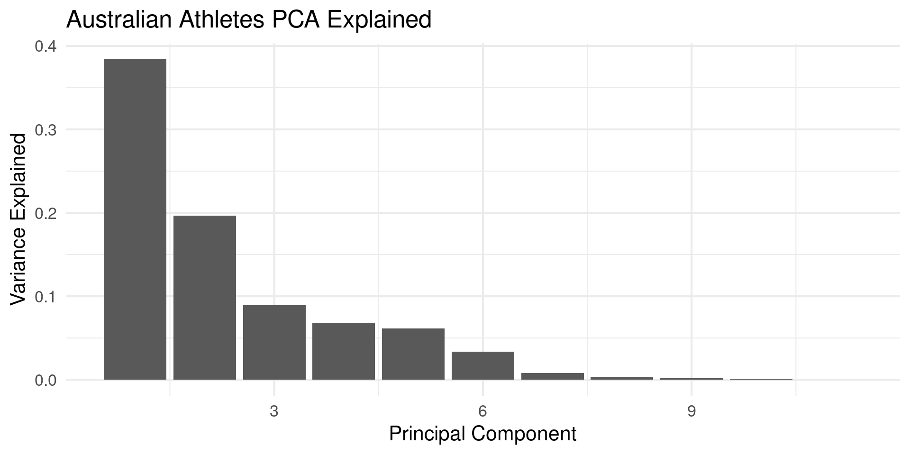
PCA Clusters
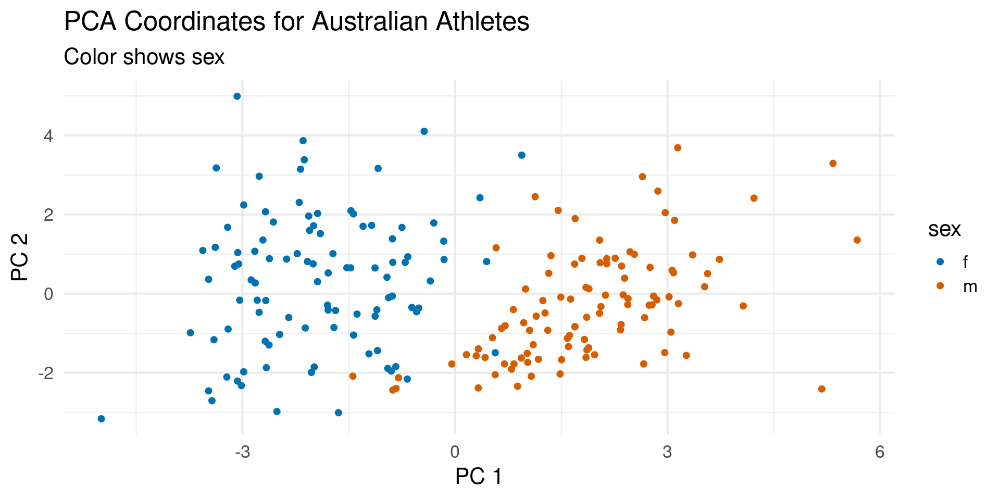
PC Clusters
- PC1: +Size, -Leanness (Sex)
- PC2: +Size, -Red Blood Cells
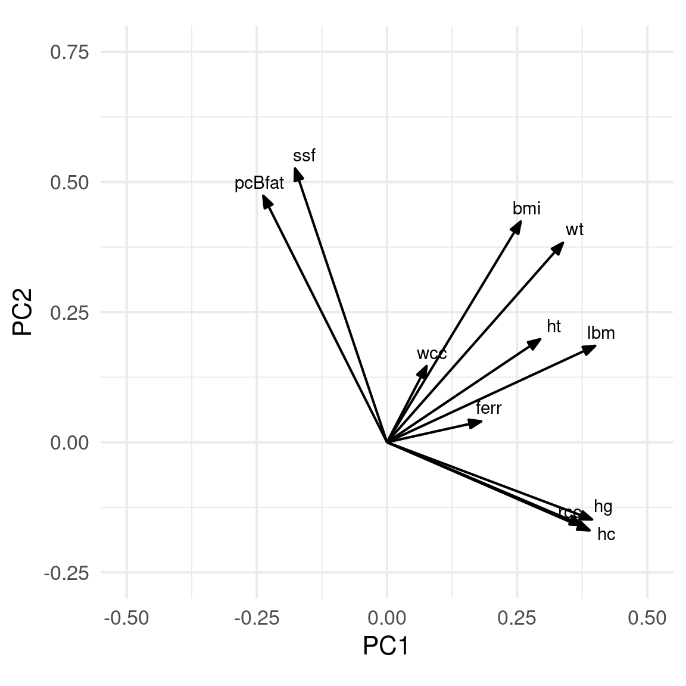
Sports
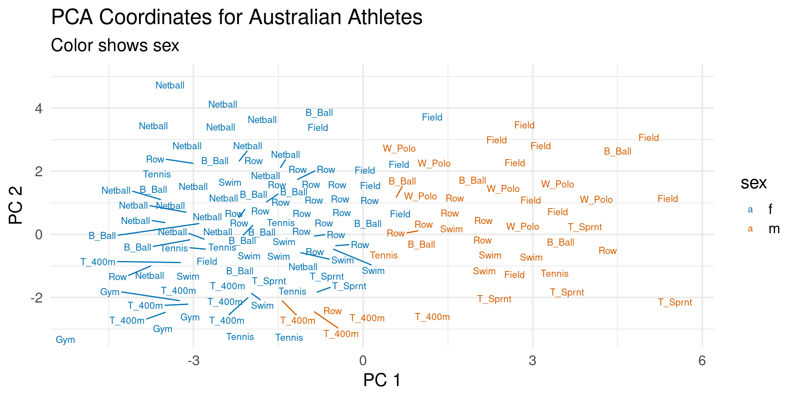
Sports Clusters
- 400m, gymnasts, tennis players have low PC2
- Netball, Field have high PC2
- Rowers, Sprinters, Swimmers, Water Polo in the middle
Higher PCs Contrast
- PC3: +Body Fat, RBCs, -Height
- PC4: +Height, Fat, RBCs, -BMI
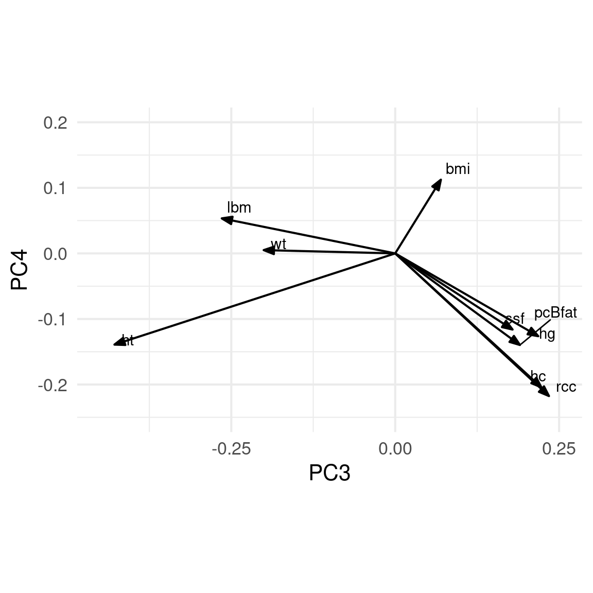
Sport Clusters 2
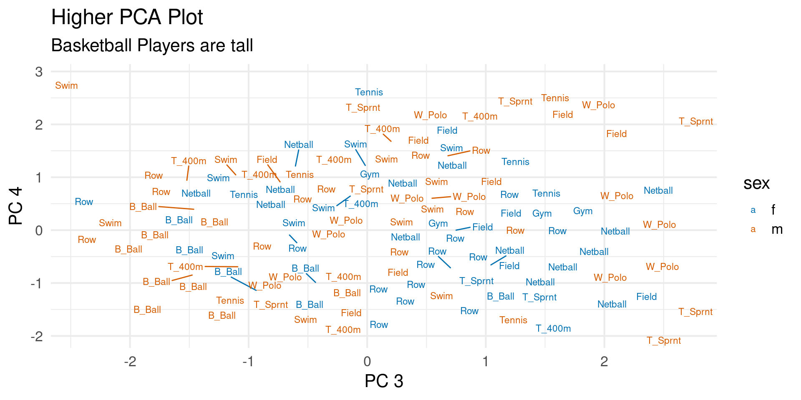
How to make these plots in R
prcompandscaleretxkeyword calcualtes embeddings
Contents of fit object
Standard deviations (1, .., p=11):
[1] 2.23404856 1.59923950 1.07582851 0.94294793 0.89180307 0.65872338
[7] 0.32428594 0.20232605 0.15228831 0.07279582 0.03293771
Rotation (n x k) = (11 x 11):
PC1 PC2 PC3 PC4 PC5 PC6
rcc 0.37449926 -0.15896859 0.23456267 -0.217592671 0.23113528 0.24042584
wcc 0.07607989 0.14643132 0.63731981 -0.193874709 -0.71219980 -0.14657450
hc 0.38921924 -0.16930334 0.22299174 -0.204335027 0.21329896 0.14848437
hg 0.39398646 -0.14839419 0.21826369 -0.126293900 0.24631047 0.04743775
ferr 0.18096941 0.04022641 0.27331307 0.888524055 -0.03510540 0.31464529
bmi 0.25688861 0.42398703 0.06970089 0.112465801 0.25980634 -0.56325123
ssf -0.17658747 0.52587398 0.17904388 -0.116159628 0.22401028 0.28597833
pcBfat -0.23764689 0.47350512 0.19029580 -0.139708577 0.22171662 0.28202541
lbm 0.39995499 0.18525045 -0.26453397 0.053428020 -0.13093113 -0.18218609
ht 0.29428652 0.19800646 -0.42823892 -0.139098319 -0.38179742 0.52599617
wt 0.33804701 0.38333328 -0.20061209 0.005007978 -0.04690227 -0.09473171
PC7 PC8 PC9 PC10 PC11
rcc -0.7566898361 -0.199201778 -0.092406080 9.108309e-03 -0.0015062443
wcc 0.0008324697 -0.016739036 -0.002971962 -1.514497e-03 0.0010625852
hc 0.2464133051 0.745988263 0.208183403 -1.621396e-02 -0.0011660217
hg 0.5886349450 -0.574708220 -0.139182502 -8.034653e-03 0.0053383594
ferr -0.0064610391 0.030403090 -0.016020513 9.893463e-05 -0.0002621549
bmi -0.0741855614 0.068435637 -0.076440484 5.747325e-01 0.0750846540
ssf 0.0166623190 -0.193117005 0.689708155 -1.666579e-02 0.0348216670
pcBfat 0.0712499174 0.171474610 -0.652105583 -1.868302e-01 0.2006538802
lbm -0.0507006292 -0.021952556 0.107081317 -4.884631e-01 0.6553134316
ht 0.0791128182 -0.008239715 -0.077125160 4.837802e-01 0.0518888717
wt -0.0219172451 0.019877608 -0.065472528 -4.018049e-01 -0.7216136734Contents of fit object
List of 5
$ sdev : num [1:11] 2.234 1.599 1.076 0.943 0.892 ...
$ rotation: num [1:11, 1:11] 0.3745 0.0761 0.3892 0.394 0.181 ...
..- attr(*, "dimnames")=List of 2
.. ..$ : chr [1:11] "rcc" "wcc" "hc" "hg" ...
.. ..$ : chr [1:11] "PC1" "PC2" "PC3" "PC4" ...
$ center : Named num [1:11] -3.77e-16 -5.22e-17 3.53e-17 -3.40e-16 -5.74e-17 ...
..- attr(*, "names")= chr [1:11] "rcc" "wcc" "hc" "hg" ...
$ scale : Named num [1:11] 1 1 1 1 1 1 1 1 1 1 ...
..- attr(*, "names")= chr [1:11] "rcc" "wcc" "hc" "hg" ...
$ x : num [1:202, 1:11] -2.07 -1.9 -3.38 -2.68 -1.8 ...
..- attr(*, "dimnames")=List of 2
.. ..$ : NULL
.. ..$ : chr [1:11] "PC1" "PC2" "PC3" "PC4" ...
- attr(*, "class")= chr "prcomp"Meaning of Components
sdevis “standard deviation” of components- square to get “variance”,
- divide by number of variables to convert to percentage
rotationis matrix where rows are Principal Componentsxis matrix that contains embeddings of each data point
Tidy PCA
- Use
augmentfrombroomto make objects tidy
# A tibble: 202 × 25
.rownames rcc wcc hc hg ferr bmi ssf pcBfat lbm ht wt
<chr> <dbl> <dbl> <dbl> <dbl> <dbl> <dbl> <dbl> <dbl> <dbl> <dbl> <dbl>
1 1 3.96 7.5 37.5 12.3 60 20.6 109. 19.8 63.3 196. 78.9
2 2 4.41 8.3 38.2 12.7 68 20.7 103. 21.3 58.6 190. 74.4
3 3 4.14 5 36.4 11.6 21 21.9 105. 19.9 55.4 178. 69.1
4 4 4.11 5.3 37.3 12.6 69 21.9 126. 23.7 57.2 185 74.9
5 5 4.45 6.8 41.5 14 29 19.0 80.3 17.6 53.2 185. 64.6
6 6 4.1 4.4 37.4 12.5 42 21.0 75.2 15.6 53.8 174 63.7
7 7 4.31 5.3 39.6 12.8 73 21.7 87.2 20.0 60.2 186. 75.2
8 8 4.42 5.7 39.9 13.2 44 20.6 97.9 22.4 48.3 174. 62.3
9 9 4.3 8.9 41.1 13.5 41 22.6 75.1 18.0 54.6 171. 66.5
10 10 4.51 4.4 41.6 12.7 44 19.4 65.1 15.1 53.4 180. 62.9
# ℹ 192 more rows
# ℹ 13 more variables: sex <fct>, sport <fct>, .fittedPC1 <dbl>,
# .fittedPC2 <dbl>, .fittedPC3 <dbl>, .fittedPC4 <dbl>, .fittedPC5 <dbl>,
# .fittedPC6 <dbl>, .fittedPC7 <dbl>, .fittedPC8 <dbl>, .fittedPC9 <dbl>,
# .fittedPC10 <dbl>, .fittedPC11 <dbl>Plotting Embeddings
aus_fit |>
augment(aus_athletes) %>%
ggplot(aes(.fittedPC1, .fittedPC2,color=sex)) +
geom_point(size = 1.5) +
scale_color_manual(
values = c(m = "#D55E00", f = "#0072B2")
) +
theme_minimal(base_size=16) +
labs(title="PCA Coordinates for Australian Athletes",
x = "PC 1", y= "PC 2",subtitle = "Color shows sex")Plotting Embeddings

Drawing Clusters
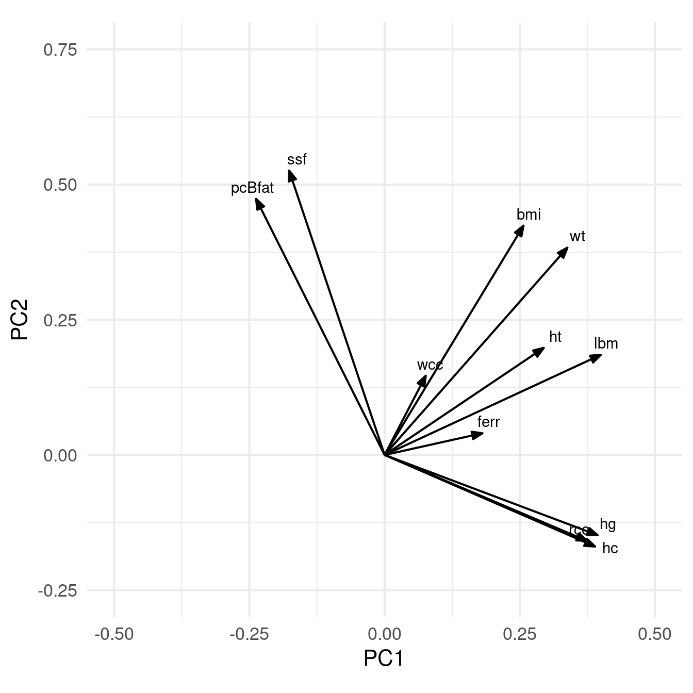
Drawing Clusters
arrow_style <- arrow(
angle = 20, length = grid::unit(8, "pt"),
ends = "first", type = "closed"
)
aus_fit %>%
tidy(matrix = "rotation") |>
pivot_wider(
names_from = "PC", values_from = "value",
names_prefix = "PC"
) |>
ggplot(aes(PC1, PC2)) +
geom_segment(
xend = 0, yend = 0,
arrow = arrow_style
) +
geom_text_repel(aes(label = column), hjust = 1,vjust=1) +
xlim(-0.5, 0.5) + ylim(-0.25, 0.75) +
coord_fixed() +
theme_minimal(base_size =16)3D Plot Using Plotly
library(plotly)
fig = pca_fit |>
augment(oc_data) |>
bind_cols(oc_group) |> plot_ly(
x=~.fittedPC1, y=~.fittedPC2, z=~.fittedPC3, color = ~Cancer, colors = c("#D55E00", "#0072B2"),size=2)
fig <- fig |> add_markers()
fig <- fig |> layout(scene = list(xaxis = list(title = "PC1"),
yaxis = list(title = 'PC2'),
zaxis = list(title = 'PC3'))
)
fig3D Plot Using Plotly
Downsides of PCA
- PCA learns a linear representation
- Tons of other methods exist for nonlinear structures
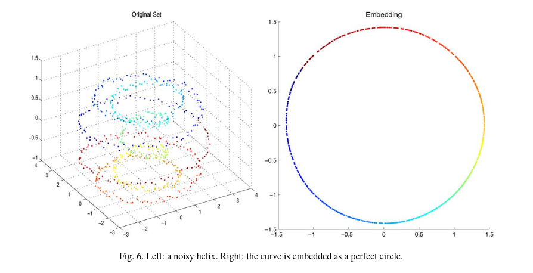
- Tons of other methods exist for nonlinear structures
Downsides of PCA
- Prone to overinterpretation
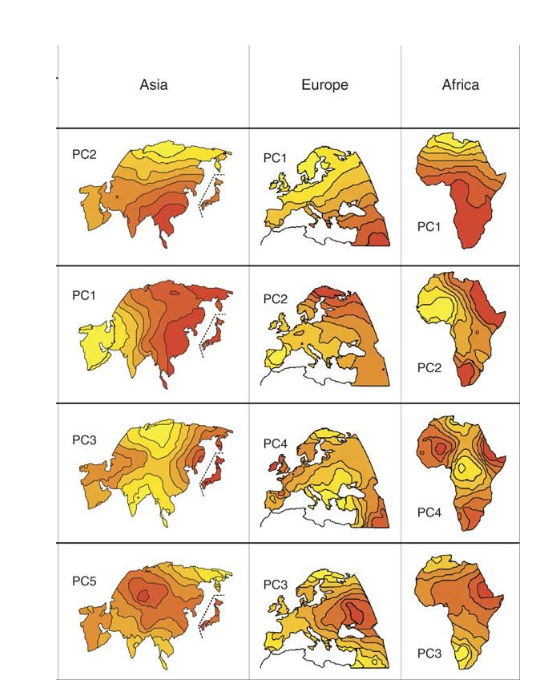
Shalizi/November
Downsides of PCA
- Prone to overinterpretation
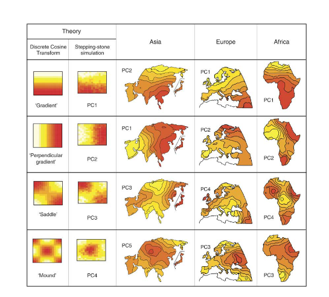
Shalizi/November
Downsides of PCA
- Sensitive to outliers
- If your measurement process is not robust….
- Using PCA could be very misleading!
- There is an algorithm called robust PCA which is great these cases